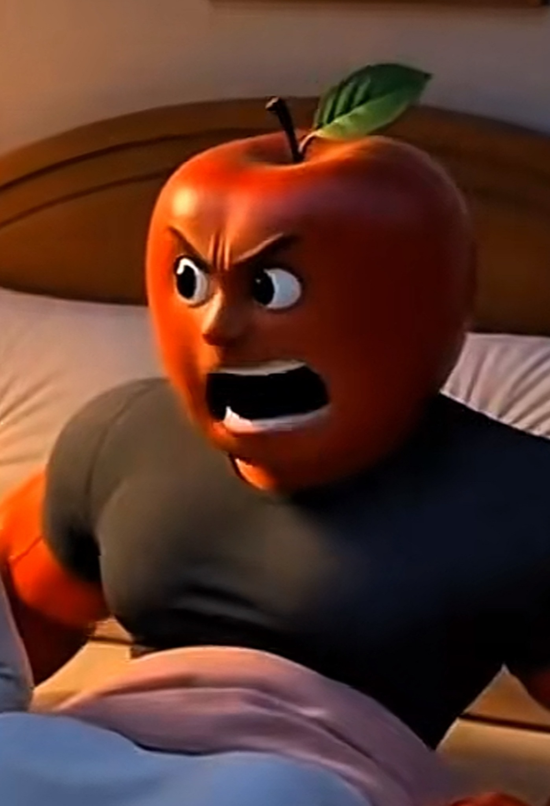

The funny viral fruit story, the mini game, and the official Telegram, X, chart, and contract address spot are now all part of one full website.
Watermelina was already the most chaotic fruit on the timeline, but things truly collapsed when her farting problem started ruining every relationship she touched. First came Apelon. He thought he could handle the drama. He could not. One legendary fart later, he was gone.
Then came Pineapple, promising loyalty, patience, and tropical understanding. That lasted right up until Watermelina farted again. Pineapple disappeared too. By then the story had grown too big for the fruit streets and landed in the highest court in the fruit universe.
At the front of the courtroom sat the honorable Judge Lemon, gavel raised, ready to decide her fate. Silence fell. The jury leaned in. The room held its breath. Then Watermelina farted in court. Judge Lemon slammed the bench and sentenced her to life in fruit jail.
But legends do not end in jail. They become games, memes, and coins. Now the mission is simple: fart, fly, dodge the fruit police, and escape.
The chaotic queen of the fruit timeline. Every time things start to calm down, Watermelina shows up, farts, and turns romance, courtrooms, and jail into pure meme history.
The no-nonsense citrus judge who tries to keep order in the fruit universe. Unfortunately for him, every serious courtroom moment somehow turns into absolute chaos the second Watermelina appears.

Apelon thought he could handle the drama. One legendary fart later he realized he absolutely could not, making him the first victim of Watermelina’s chaotic love life.
Pineapple arrived hoping to be the calm tropical second chance. Instead he quickly learned that surviving the Watermelina saga is much harder than it looks.